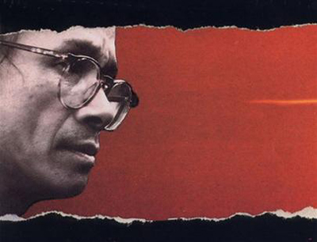

“Người đã đến và người sẽ về bên kia núi, từng câu nói là từng cánh buồm dong cuối trời, còn lại...". Người đã đến đây, dự vào khóc cười, đã vui chơi trong cuộc đời này, rồi không hẹn mà ra đi trong một ngày - ngày cũng để vui chơi mà thôi - là ngày thế giới người ta nói dóc với nhau. Mồng một tháng Tư. Người đó là nhạc sĩ Trịnh Công Sơn.
Nhưng hãy đừng buồn bã vì cuộc chia li này, nơi kia là cát bụi vĩnh hằng, là cõi về, là chốn quê nhà miên viễn mà lần nào đó trong thời trẻ tuổi người nghệ sĩ đã nghe mời gọi âu yếm, "Dù thật lệ rơi lòng không buồn mấy, giật mình tỉnh ra ồ nắng lên rồi...". Ừ đi, người đi, không phải thí dụ bây giờ tôi phải đi, người đi mãi mãi qua bên kia núi đó, để lại đây cho chúng ta hình bóng nụ cười, để lại đây muôn ngàn lời an ủi.
Người ta là ai; là gì trong cõi đời này? Đời người, với Trịnh Công Sơn là một hành trình cát bụi, sự sống chỉ là đối diện với cái chết, trong niềm vui của tuổi trẻ và tình yêu đã thấy đâu đó “Lau trắng trong tay" và đường trần là một chuyến khăn gói để “Mai kia chào cuộc đời nghìn trùng con gió bay". Cái nhìn ấy thật buồn nhưng không hẳn bi quan, bởi vì cũng trong nó vụt sáng lên cái ý niệm Cát bụi tuyệt vời. Dẫu là thoáng chốc thôi trong thế gian vô cùng, thì hãy sống cho tận cùng, sống cho đẹp, hãy yêu, yêu em, yêu cuộc đời và yêu mọi người, "Làm sao biết từng nỗi đời riêng, để yêu thêm yêu cho nồng nàn"; và dẫu cho rồi Em sẽ đi, mọi điều sẽ mất, cũng hãy vui như mọi ngày, vui như mọi người, dù “Chiều nay không ai qua đây hỏi thăm tôi một lời, vẫn yên chờ đêm tới"... Cát bụi hư vô, vậy thì Em ạ, hãy bỏ đi tất cả, đừng hận thù, hãy nhìn đời qua bằng ánh mắt độ lượng, hãy yêu thương vì chỉ có yêu thương là cứu chuộc chúng ta, đừng bao giờ đòi hỏi, “Sống trong đời sống cần có một tấm lòng, để làm gì em biết không? Để gió cuốn đi...". Trịnh là như thế.
Trong khát vọng cứu chuộc bằng tình yêu đó, Trịnh Công Sơn đã ứng xử với chiến tranh bằng hàng loạt ca khúc phản chiến, những Ca khúc Da vàng, những Lại gần với nhau, những Nối vòng tay lớn... Từ căn gác nhỏ gần cầu Phú Cam, Huế đã bắt đầu cho một tinh thần phản chiến, không như cách của bạn bè: Ngô Kha xuống đường, Hoàng Phủ lên rừng mà bằng âm nhạc. Âm nhạc ấy được hát lên trong những cuộc tranh đấu, ở Huế, ở Đà Nẵng, ở Sài Gòn.... Vào năm 1968, có một người trai, tôi không biết người trai ấy từ đâu, là sinh viên ở Huế, là chiến binh giải phóng trong rừng Nam Đông hay Quảng Nam hoặc có thể là một lính bên kia, đã lên đỉnh cao nhất của đèo Hải Vân để khắc dòng chữ Nối vòng tay lớn như là khát vọng nối dài yêu thương. Năm tháng đi qua, đèo Hải Vân rồi người ta không chạy xe qua nữa, nhưng tên ca khúc của Trịnh thì mãi mãi ở đó cùng tuế nguyệt. Tôi biết, có một thế hệ lớn lên những năm 1960, đã sống và đã chết, trong âm hưởng của Trịnh. Một người như thế là Anne, tuyệt vọng vì chiến tranh và thôi thúc lời mời Xin mặt trời ngủ yên, Anne nhảy xuống biển Vũng Tàu, không chết, bèn lên rừng, về sau thành biệt động thành vào tù ra khám, sau giải phóng được người ta biết tới như một tên tuổi của báo chí đổi mới.
Chiến tranh là khoảnh khắc, nhưng những người tình nhân và tình yêu là mãi mãi. Hơn ai hết Trịnh Công Sơn là người thấu tỏ mọi nỗi lòng của người yêu nhau. Đẹp ư? Có hình tượng nào sánh với Diễm xưa, Biển nhớ hay Hoa vàng mấy độ, hay Môi hồng đào. Người nào từng mất mát một mối tình không tìm thấy mình trong tình khúc Trịnh Công Sơn: “Em phụ tôi một thời bé dại... thơ dại ra đi quên hết tình tôi."
Trong niềm vui, người ta đến với Trịnh, trong nỗi buồn người ta càng đến với Trịnh. Làm sao sống qua cuộc đời mà không biết mất mát thương đau, nhưng “Đừng tuyệt vọng, em ơi đừng tuyệt vọng", hãy bước xuống phố, ngày này còn đây, hãy nhìn một đoá tường vi và chợt ngộ ra "Đời ta có khi là lá cỏ ngồi hát ca rất tự do... "
Phần lớn tuổi trẻ sôi nổi của tôi trôi qua ở Huế. Ở đó, Trịnh Công Sơn như một Tôn giáo, không phải tôn giáo khuyên người ta cuồng điên mơ trăm năm sau, mà là một tôn giáo giữa đời bình dị này, an ủi và xoa dịu con người. Ở đó, ca khúc Trịnh Công Sơn vang lên trong quán cafe, trong giờ nghỉ trên giảng đường, trong cư xá, trong những đêm trắng bên bờ sông Hương. Trong nỗi buồn và niềm vui tôi đã hát cùng bè bạn, và từ đây mỗi người đi vào đời đều biết một cách nào đó để yêu thương.
Giờ đây, trong những đêm sâu thẳm của Hà Nội, một mình trong căn phòng nhỏ, không có ai, nhiều cuộc tình đã qua đi, chỉ còn lại Trịnh Công Sơn, hát không mỏi, hát để an ủi nỗi cô đơn của tôi. Té ra, người này mới thực sự là người tình chung thủy nhất của tôi.